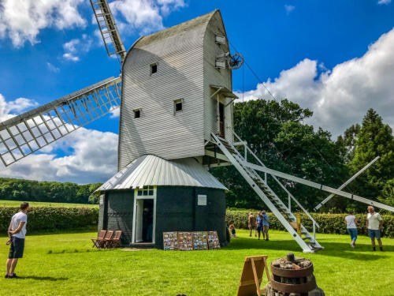
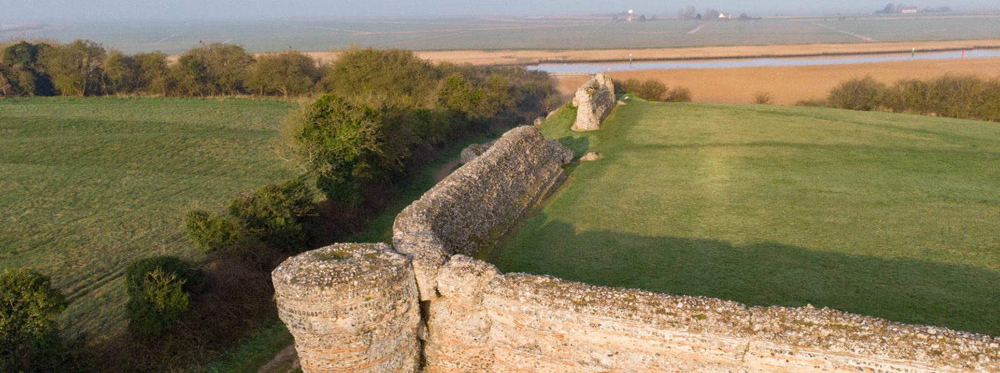
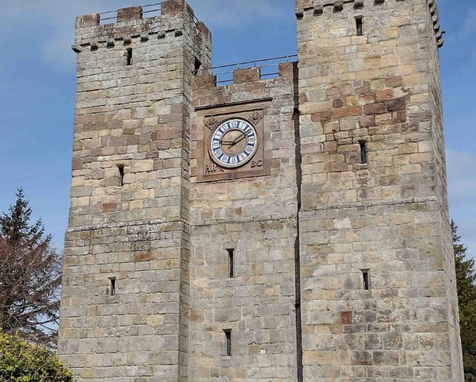
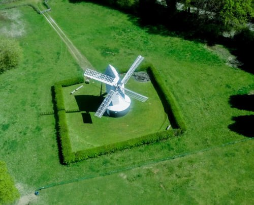

Carefully Researched
Every experience is grounded in historical, architectural and archaeological research.
Past Paths
Past Paths creates carefully researched digital audio experiences for heritage organisations. Combining architectural and historical expertise with engaging interpretation, our experiences allow visitors to explore each site at their own pace.
About
Past Paths creates carefully researched digital audio experiences for heritage organisations. Combining architectural and historical expertise with engaging interpretation, our experiences allow visitors to explore each site at their own pace.

Process
We begin with a conversation about the site, its history, its visitors and the organisation behind it.
We gather and verify the architectural, archaeological and historical material that will shape the experience.
We develop the narrative, tone and visitor route so the experience is accurate, engaging and appropriate to the place.
We write, record, edit and prepare the digital audio experience for publication through the Past Paths app.
The completed tour is made available to visitors on iOS and Android.
Revenue is shared with the partner organisation, with the experience remaining available and able to develop over time.
Partnerships
Every experience is grounded in historical, architectural and archaeological research.
Past Paths funds the creation of each experience, removing the need for initial investment.
Income generated through the app is shared with the partner organisation.
Experiences remain available through the app and can continue to develop over time.

Organisations
Available Tours
Burgh Castle Roman Fort
Visit OrganisationAvailable Tours
Preston Tower
Visit OrganisationAvailable Tours
Lowfield Heath Windmill
Visit OrganisationTours



The App
Download the Past Paths app to discover and purchase digital history experiences.
Contact
We'd be delighted to hear from you.